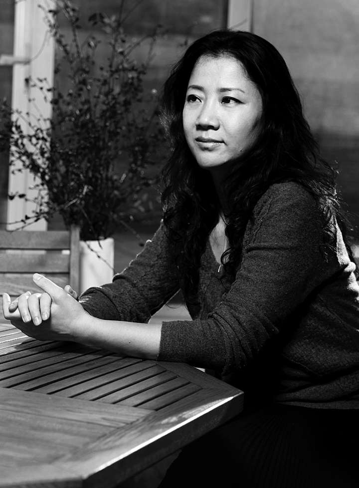

"Taikang Project" - Public Idealism Pointing at the System
Tang Xin
“One Work" is an exhibition series that I am curating this year. The plan is to invite two or three artists at a time to create a piece of art together. "Taikang Project", the work which inaugurated the series, was created by Hong Hao and Yan Lei. This took place successfully in April of this year. The artwork is primarily composed of two parts: one part is a 3 x 5.9 meter painting; the other part consists of three life insurance policies with a total sum close to seven million yuan.
This is a piece of conceptual art. Linguistically speaking, Hong Hao and Yang Lei have never adopted the reflexive subject-object methodology, but have adopted a visual methodology that emphasizes depth and multiplicity of meaning. They have chosen "Van Gogh" and "Taikang" as their two main creative elements.
1. Van Gogh
For one generation of Chinese artists, Van Gogh is of unusual importance. Not only is he a spiritual idol, many dream of creating works like his. The painted portion of the "Taikang Project" was intended to replicate and enlarge Van Goghs "Ward in The Hospital in Arles", at the same time, Yan Lei and Hong Hao added their own images to the scene of the ward; they identify with their idol through disease. This painting does not rely entirely on post-impressionist techniques, rather, it tries to achieve an effect of commonly printed images. It presents the audience with the results of a misreading of Western art. In fact, misreading is an important part of the development of contemporary Chinese art history, and goes much further than what I have described here.
In the last 30 years of the past century, access to cultural resources in China was still relatively restricted and communication was rather backward. Artists could only get a glimpse of Western artincluding Van Gogh-through low quality prints. Consider this, they thought of Van Gogh as the Western artist incarnate, and they took "painting like Van Gogh" as the ideal of their artistic pursuit. To some extent, there was a longing for a Western artistic system, even though this system was not well understood; this was a result of their misunderstandings of Western art. They didnt belong completely to either side, yet their disappointments with the old national system increasingly brought about a subconscious longing for the Western system. They desired the formation of any policies that resembled those in the West, and they wanted art galleries, dealers, and art loving collectors who would support them-all this so that they could be like Western artists, like Van Gogh able to freely invest their energy into artistic creation. That was a common ideal among artists of that time.
At that time, contemporary Chinese art had just emerged and was excluded from the official artistic system. However, it was soon supported by the West as the mainstream of Chinese art. Thus, the artists who had been abandoned by the old national system were wandering between national and Western systems. Today, along with a deeper understanding of the pros and cons of the Western artistic system, a new system is sprouting that will replace the old one and people seem to clearly see its future path. "Taikang Project" has provided us with this sense. This sense is confusion rather than joy. The mixture of love and hate toward these two value systems makes the "hospital ward" a sudden scene of contradiction and conflict.
Due to their doubts and vigilance toward system building, ever since the beginning of the project, Hong Hao and Yan Lei have set themselves in opposition to "Taikang" and the hospital ward in opposition to insurance.
2. Taikang
"Taikang Project" is a response to the current artistic system and artistic environment, its criticism of reality is unlike traditional realism in that it does not have a clear political target. Instead, it adopts a completely different linguistic format and mode of thinking to pursue a type of attitude. To put this attitude in its social context, this is a type of socio-political attitude whose purpose is not to criticize, but rather to provoke peoples thinking through emphasizing the "power of symbolism" in the artwork. Thus, it prompts people to make corrections or improvements to existing issues.
There are two major relations between the "Taikang Project" and "Taikang", the first is Taikang Life Insurances investment in Taikang Top Space and participation in artistic development; the second is that "Taikang" is, itself, a life insurance company. Taikang Life Insurance cooperation belongs in the second generation of Chinese insurance companies. Each year since 2000, it has invested large sums in the companys art department, Taikang Top Space, to support contemporary artistic activities and exhibitions. Its goal is to support the development of contemporary Chinese art on its own soil. In this regard, it is unique within the contemporary Chinese financial field. This is also the reason that Taikang Life Insurance is well-know in the art field.
As a new art system emerges in China, any force has the potential to affect the growth of Chinese art. Thus, it is of great importance to find an authentic motivating system, a system that can push art to develop in a positive direction. "Taikang" here symbolizes the emphasis of one aspect of the artistic system, using the nature of an insurance company to point out the related issues of the effect of the artistic system on the development of art and artists. In particular, the metaphorical system is able push forward art development and the desired function of protecting the artist; who will provide insurance for the development of the artist? With this work, They question this artistic system whose goal is success in the market.
3. Insurance
"Taikang Project" includes three life insurance policies totaling nearly seven million yuan. These were bought for the artists from Taikang Insurance. Life insurance is a commercial product that people purchase to protect their bodies, health, and life; it usually includes life insurance, health insurance, and accident insurance. Interestingly, in order to emphasize the symbolic meaning of their work, the artists originally wished to be insured for Van Goghs diseases-of the ears or mental sickness-but no such insurance was available in China. If they would have applied for a new insurance package, it would have been necessary for the insurance company and China Insurance Regulatory Commission to give their stamps of approval; this would touch on every aspect of Chinese insurance system and require at least one year. Further the possibility for success would be slim. Thus, they could only choose from existing packages covering "accidental injury" or "hospitalization". According to the report of their physical examination, finally Yan Lei got both two life insurance policies, including 5 million yuan "accidental injury" and more than 200 thousand yuan "hospitalization". But Hong Hao only was able to have 1.5 million yuan "accidental injury". Later, due to the large sum insured, it was necessary for Taikang Life Insurance to share the risk with China Re-Insurance and Swiss Re-Insurance, after many ups and downs, the policies finally came into effect. Thus this work again merges with the Chinese insurance system. It is this works other level of symbolic meaning, that is, its advocacy of nonunilateral public relations and regulations.
Instead of calling "Taikang Project" a work of art, we should refer to it as an art product, because its complex relationship with the artists actual life has broken through the traditional boundaries between art and life. Usually speaking, the creative process is comprised of the rearing of the artwork, once this process if over, the work is born, thereafter, the work no longer has a relationship with the artist. However in "Taikang Project" the relationship with the artwork and the artistic process are complex. The three life insurance policies were originally real, they were things of everyday life, and the period insured was one year. When they were directly inserted as creative elements into the artwork, the artwork itself was endowed with the time concept of one year. And, insurance itself became a new artistic medium. If within this one year Hong Hao and Yan Lei had none of the accidents described in the insurance, the forms of this art will not produce any other change. However, if there was an accident, Taikang Life Insurance and the other two re-insurance companies would put the contract into practice and reimburse their expenses. The act of reimbursement would become the epilogue for this artwork. Therefore, this artwork has not yet been completed. And who will complete the epilogue? How will it be completed? There are endless coincidences and possibilities which cant be manipulated by the artists themselves, but are related to the artists health, Chinese policies of insurance, relevant laws and regulations, etc. In other words, they are related to the lives of the artists within this year. The relationship between "artwork" and "product" redefines the relationship between "art" and "life".
"Taikang Project" continues to re-think art creation methodologies with the exploration of artistic media; realistic and life-like methods of expression are bestowed with challenging strength. This is also what I like to see in the curating of "a piece of art", I believe the works that come after this series will be just as spectacular. We are looking forward to them.
Tang Xin
2006-6

Tang Xin
1990 Graduated from Tianjin University of Science Technology, Tian Jin, China
1997-2002 Independent curator, curated contemporary Chinese art exhibition and contemporary art exchange projects between China and Europe.
2003 Found Taikang Top Space (Taikang Space, now) in Taikang Life Insurance Co. Ltd, which is the first non-profit art space invested by Chinese large financial enterprises.
2003-2012Head of Art Collection of Taikang Life Insurance Co. Ltd.Director & curator of Taikang Space